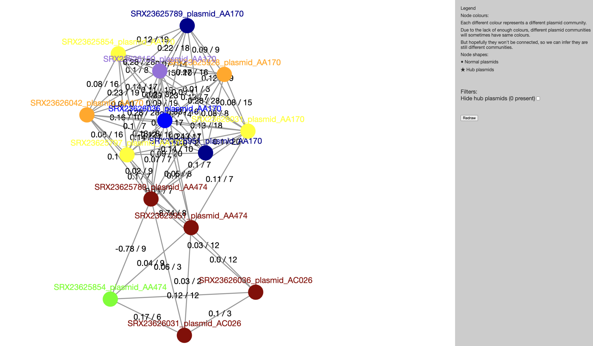
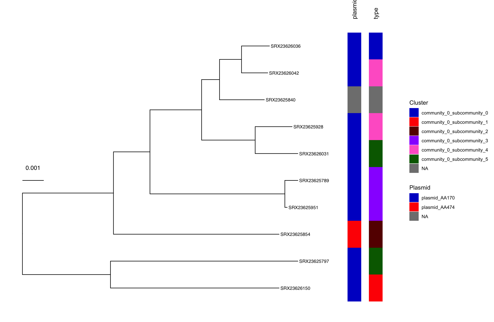

Describe the role of plasmids in antimicrobial resistance (AMR) spread.
Identify plasmids in whole-genome sequencing (WGS) data using MOB-suite.
Explore plasmid clustering using Pling to identify related plasmids.
41.1 Plasmids
Plasmids are small, circular, extrachromosomal DNA molecules that play a crucial role in the horizontal gene transfer (HGT) of antimicrobial resistance (AMR) determinants among bacteria. Unlike chromosomal genes, plasmids can autonomously replicate and transfer between bacterial cells via conjugation, transformation, or transduction, enabling the rapid spread of resistance genes across different species and even genera. Many plasmids carry mobile genetic elements (MGEs), such as transposons and integrons, which further facilitate the acquisition and dissemination of AMR genes. This mobility allows bacteria to quickly adapt to antibiotic pressure, contributing to the global AMR crisis. Clinically relevant resistance genes, including those encoding extended-spectrum β-lactamases (ESBLs), carbapenemases (e.g., NDM, KPC), and plasmid-mediated quinolone resistance (PMQR), are frequently plasmid-borne. Because plasmids can persist in bacterial populations even in the absence of antibiotic selection, they serve as long-term reservoirs for resistance, complicating infection control and treatment strategies. Understanding plasmid epidemiology is therefore essential for tracking AMR spread and developing targeted interventions.
41.2 Plasmid Identification
Plasmid identification is a critical step in understanding the role of plasmids in the spread of antimicrobial resistance (AMR) and other traits among bacteria. The most commonly used tools for plasmid identification in whole-genome sequencing (WGS) data include PlasmidFinder and mlplasmids, which detect plasmid-derived sequences using curated databases of known replicons. Other popular tools like MOB-suite and Platon employ machine learning and homology-based approaches to predict plasmid contigs and reconstruct plasmid structures from assembled genomes.
41.2.1 MOB-suite
The MOB-suite is designed to be a modular set of tools for the typing and reconstruction of plasmid sequences from WGS assemblies. It is particularly useful for identifying plasmid contigs in assembled genomes, reconstructing plasmid sequences, and predicting their potential mobility.
41.2.2 Running MOB-suite
We are going to use E.coli assemblies we’ve provided for you as input for MOB-suite and these are located in E_coli/data/assemblies. These assemblies were generated from ONT data using the assembleBAC-ONT pipeline.
First activate the MOB-Suite software environment:
mamba activate mob_suite
To run MOB-suite on a single assembly, the following command can be used:
--outdir - output directory for MOB-suite to save its outputs.
-g - the path to the reference database of known plasmid sequences. This is a required parameter for MOB-suite to identify plasmids in the input assembly.
As it runs, mob_recon prints several messages to the screen.
We can see all the output files mob_recon generated:
Make sure you are in the E_coli directory for this exercise.
Above, we have run MOB-suite on a single sample. However, we have ten samples that we need to repeat the analysis on. To do this, we’ve provided a script that runs MOB-suite on all the FASTA files for all the samples in the data/assemblies directory using a for loop.
In the folder scripts (inside your analysis directory), you’ll find a script named 01-run_mobsuite.sh.
Open the script, which you will notice is composed of two sections:
#### Settings #### where we define some variables for input and output files names. If you were running this script on your own data, you may want to edit the directories in this section.
#### Analysis #### this is where MOB-suite is run on each sample as detailed in Section 41.2.2. You should not change the code in this section.
Activate the software environment: mamba activate mob_suite
Run the script with bash scripts/01-run_mobsuite.sh. If the script is running successfully it should print a message on the screen as the samples are processed.
How many different plasmids were identified in sample SRX23625854?
Which contig(s) were identified as chromosome for sample SRX23625854?
AnswerAnswer
We opened the script 01-run_mobsuite.sh and these are the settings we used:
fasta_dir="data/assemblies" - the name of the directory with FASTA files in it.
outdir="results/mobsuite" - the name of the directory where we want to save our results.
database="databases/mob_suite/2019-11-NCBI-Enterobacteriacea-Chromosomes.fasta" - the name of the directory with the plasmid database in it.
We then ran the script using bash scripts/01-run_mobsuite.sh. The script prints a message while it’s running:
Processing SRX236257892025-06-26 12:37:29,646 mob_suite.mob_recon INFO: MOB-recon version 3.1.9 [in /rds/user/ajv37/hpc-work/micromamba/envs/mob_suite/lib/python3.11/site-packages/mob_suite/mob_recon.py:984]2025-06-26 12:37:29,729 mob_suite.mob_recon INFO: SUCCESS: Found program blastn at /rds/user/ajv37/hpc-work/micromamba/envs/mob_suite/bin/blastn [in /rds/user/ajv37/hpc-work/micromamba/envs/mob_suite/lib/python3.11/site-packages/mob_suite/utils.py:597]2025-06-26 12:37:29,765 mob_suite.mob_recon INFO: SUCCESS: Found program makeblastdb at /rds/user/ajv37/hpc-work/micromamba/envs/mob_suite/bin/makeblastdb [in /rds/user/ajv37/hpc-work/micromamba/envs/mob_suite/lib/python3.11/site-packages/mob_suite/utils.py:597]2025-06-26 12:37:29,803 mob_suite.mob_recon INFO: SUCCESS: Found program tblastn at /rds/user/ajv37/hpc-work/micromamba/envs/mob_suite/bin/tblastn [in /rds/user/ajv37/hpc-work/micromamba/envs/mob_suite/lib/python3.11/site-packages/mob_suite/utils.py:597]2025-06-26 12:37:29,804 mob_suite.mob_recon INFO: Processing fasta file data/assemblies//SRX23625789.fa [in /rds/user/ajv37/hpc-work/micromamba/envs/mob_suite/lib/python3.11/site-packages/mob_suite/mob_recon.py:1011]2025-06-26 12:37:29,804 mob_suite.mob_recon INFO: Analysis directory results/mobsuite/SRX23625789 [in /rds/user/ajv37/hpc-work/micromamba/envs/mob_suite/lib/python3.11/site-packages/mob_suite/mob_recon.py:1012]2025-06-26 12:37:31,995 mob_suite.mob_recon INFO: Writing cleaned header input fasta file from data/assemblies//SRX23625789.fa to results/mobsuite/SRX23625789/__tmp/fixed.input.fasta [in /rds/user/ajv37/hpc-work/micromamba/envs/mob_suite/lib/python3.11/site-packages/mob_suite/mob_recon.py:1107]...
There are a few different output files generated by MOB-suite for each sample. The most useful one to help answer the questions is contig_report.txt. We can use less to look at the number of plasmids identified in the sample and which contig(s) were identified as the chromosome.
We can see that MOB-suite identified 3 plasmids (AA579, AA170, AA474) in this sample, and the contigs identified as the chromosome were contig_1, contig_4, and contig_7.
41.3 Plasmid clustering
41.3.1 Pling
Pling is a software workflow for plasmid analysis using rearrangement distances, specifically the Double Cut and Join Indel (DCJ-Indel) distance. By intelligently combining containment distance (shared content as fraction of the smaller) and DCJ-indel distance (“how far apart evolutionarily” in a structural sense), and by preventing shared mobile elements from clouding the issue, it infers clusters of related plasmids.
41.3.2 Running Pling
To run Pling, we need to provide it with the plasmid sequences that were identified by MOB-suite. These need to be copied from the results/mobsuite directory to a new directory called results/pling. Now we can run Pling on the plasmid sequences we identified with MOB-suite:
# activate the pling software environmentmamba activate pling# create pling output directorymkdir-p results/pling/# copy plasmid sequences to pling directorycp results/mobsuite/*/*_plasmid_*.fasta results/pling/# create the input file for plingls-d-1 results/pling/*.fasta > input.txt# run plingpling input.txt results/pling/output align
The options we used are:
input.txt - the plasmid FASTA files to cluster.
results/pling/output - output directory for pling to save its outputs.
align - integerisation method: “align” for alignment.
As it runs, pling prints several messages to the screen.
Your next task is to run Pling on your data.
In the folder scripts (within your analysis directory) you will find a script named 02-run_pling.sh. This script contains the code to run Pling.
Edit this script, adjusting it to fit your input files and the name of your output directory.
Activate the pling software environment.
Run the script using bash scripts/02-run_pling.sh.
While the pipeline runs, you will get a progress printed on the screen, and then a message once it finishes.
AnswerAnswer
The fixed script is:
#!/bin/bash# create output directorymkdir-p results/pling/# copy plasmid sequences to Pling directorycp results/mobsuite/*/*_plasmid_*.fasta results/pling/# create the input file for Plingls-d-1 results/pling/*.fasta > input.txt# run Plingpling input.txt results/pling/output align
We ran the script as instructed using:
bash scripts/02-run_pling.sh
While it was running it printed a message on the screen:
Batching...
Completed batching.
Aligning, integerising, and building containment network...
Completed distance calculations and clustering.
41.3.3 Pling results
Now that Pling has run we can look at the results. The file we’ll have a look at is index.html: go to the File Explorer application , navigate to results/pling/output/dcj_thresh_4_graph/visualisations/communities/ and double click on index.html.
This will open the file in your web browser:
You can click on any of the communities on the list to be taken to a visualisation of that community’s containment network. Click on the first link on this page (View community_0 (14 nodes, 59 edges)). Pling defines broad plasmid communities by building a containment network. Each node is a plasmid, and its colour denotes which subcommunity it’s assigned to. There are edges between every pair of plasmids that have a containment distance less than or equal to 0.5, and the edges are labelled by both containment distance (first number) and DCJ-Indel distance (second number). The layout may be a bit different, as it is regenerated each time you view the community.

ExerciseExercise 3 - Examine Pling output
Open the index.html file in the containment directory of your Pling results and try to answer the following questions:
How many plasmid communities were identified?
How many plasmids are in the largest community?
We can also add the plasmid clustering results to a phylogenetic tree of our samples in R using the ggtree package. This will allow us to identify which plasmids are “the same” and spot horizontal gene transfer (HGT) events.
Generate a ‘quick and dirty’ phylogenetic tree of our samples using mashtree. Run the script 03-run_mashtree.sh in the scripts directory. This will generate a tree in the results/mashtree directory.
Open the script 04-plot_pling.R in the scripts directory in RStudio.
Run the script line-by-line to generate the annotated phylogenetic tree.
Do you see any HGT events in the tree?
AnswerAnswer
We opened the index.html file in the communities directory of our Pling results and found that:
How many plasmid communities were identified?: 14 communities were identified.
How many plasmids are in the largest community?: The largest community (community_0) has 14 plasmids.
We built a phylogenetic tree using mashtree. We then opened the script 04-plot_pling.R in RStudio and ran it line-by-line. The script generated a phylogenetic tree of our samples and added metadata strips for plasmid “type” and community to spot HGT events. We can see that samples SRX23626042 and SRX23625928 have versions of the AA170 plasmid from the same community, indicating potential horizontal gene transfer (HGT) events.

41.4 Summary
TipKey Points
Plasmids are small, circular DNA molecules that can carry antimicrobial resistance (AMR) genes and facilitate horizontal gene transfer (HGT) among bacteria.
MOB-suite is a tool for identifying plasmid contigs in whole-genome sequencing (WGS) assemblies, reconstructing plasmid sequences, and predicting their potential mobility.
Pling is a software workflow for plasmid clustering using rearrangement distances, specifically the Double Cut and Join Indel (DCJ-Indel) distance, to infer clusters of related plasmids.